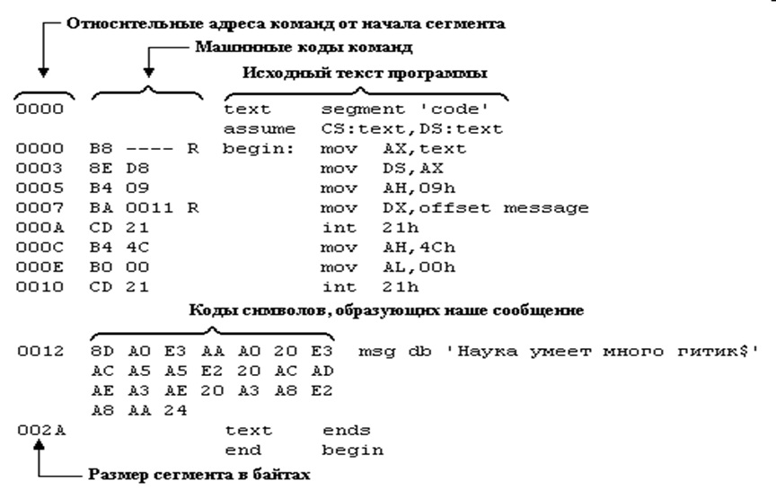

Структура программы на языке Ассемблера.
Исходный программный модуль – это последовательность
предложений. Различают два типа предложений:
- инструкции процессора;
- директивы ассемблера.
Инструкции управляют работой процессора, а директивы указывают ассемблеру
и редактору связей, каким образом следует объединять, инструкции для создания
модуля, который и станет работающей программой.
Инструкция процессора на языке ассемблера состоит не более чем из четырех полей
и имеет следующий формат:
[[метка:]] мнемоника [[операнды]]
[[;комментарии]]
Единственное обязательное поле – поле кода операции (мнемоника),
определяющее инструкцию, которую должен выполнить микропроцессор.
Поле операндов определяется кодом операции и содержит дополнительную
информацию о команде. Каждому коду операции соответствует определенное
число операндов.
Метка служит для обозначения
какого-то определенного места в памяти, т. е. содержит в символическом
виде адрес, по которому храниться инструкция.
Преобразование
символических имен в действительные адреса осуществляется программой
ассемблера.
Часть строки исходного текста после символа «;»
(если он не является элементом знаковой константы или строки знаков)
считается комментарием и ассемблером игнорируется.
Пример:
| Метка |
Код операции |
Операнды |
;Комментарий |
| MET: |
MOVE |
AX, BX |
;Пересылка |
Структура директивы аналогична структуре инструкции.
Предложения определяют структуру и функции программы,
они могут начинаться с любой позиции и содержать не более 128
символов. При записи предложений действуют следующие правила
расстановки пробелов:
- пробел обязателен между рядом стоящими идентификаторами и/или числами
(чтобы отделить их друг от друга);
- внутри идентификаторов и чисел пробелы недопустимы;
- в остальных местах пробелы можно ставить или не ставить;
- там, где допустим один пробел, можно ставить любое число пробелов.
Все предложения языка ассемблера делятся на директивы ассемблера и
инструкции (команды) процессора.
Директивы ассемблера действуют лишь в период компиляции программы и позволяют
устанавливать режимы компиляции, задавать структуру сегментации программы,
определять содержимое полей данных, управлять печатью листинга программы,
а также обеспечивают условную компиляцию и некоторые другие функции. В
результате обработки директив компилятором объектный код не генерируется.
Инструкции процессора представляют собой мнемоническую форму записи
машинных команд, непосредственно выполняемых микропроцессором.
Выражения.
В языке ассемблера выражения могут быть использованы в инструкциях или директивах
и состоят из операндов и операторов.
Операнды представляют значения, регистры или адреса ячеек памяти,
используемых определенным образом по контексту программы.
Операторы выполняют арифметические, логические, побитовые и другие
операции над операндами выражений.
Программа типа СОМ.
Программа, выводящая на экран текст «Hello world!».
; hello-l.asm
; Выводит на экран сообщение
"Hello World!" и завершается |
.MODEL TINY |
; модель памяти, используемая для СОМ |
.CODE |
; начало сегмента кода |
ORG 100H |
|
START: MOV AH,9 |
; номер функции DOS - в АН |
MOV DX, OFFSET MESSAGE |
; адрес строки - в DX |
INT 21H |
; вызов системной функции DOS |
RET |
; завершение СОМ-программы |
MESSAGE DB "Hello World!",0DH,0AH,'$' |
; строка для вывода |
END START |
; конец программы |
Компиляция
Компиляция — трансляция программы, составленной на исходном
языке.
На этапе трансляции решается несколько задач:
- перевод команд ассемблера в соответствующие машинные команды;
- построение таблицы символов;
- расширение макросов;
- формирование файла листинга и объектного модуля.
Листинг трансляции:

- Команды программы имеют различную длину и располагаются в
памяти вплотную друг к другу. Так, первая команда mov AX,text,
начинающаяся с байта 0000 сегмента, занимает 3 байта.
Соответственно, вторая команда начинается с байта 0003. Вторая
команда имеет длину 2 байта, поэтому третья команда начинается
с байта 0005 и т.д.
- Предложения программы с операторами segment, assume,
end не транслируются в какие-либо машинные коды и не находят
отражения в памяти. Они нужны лишь для передачи транслятору
служебной информации.
- Транслятор не мог полностью определить код команды mov AX,text.
В этой команде в регистр AX засылается адрес сегмента text.
Однако этот адрес станет известен лишь в процессе загрузки выполнимого
файла программы в память. По этому в листинге на месте этого адреса
стоит прочерк.
- Текст, введенный в программу, также оттранслировался: вместо символов
текста в загрузочный файл попадут коды ASCII этих символов.
Для TASM:
tasm hello-1.asm
Для MASM:
ml /c hello-1.asm
Компоновка
Главная цель этого этапа — преобразовать код и данные в объектных файлах
в их перемещаемое выполняемое отображение. После этого
операционная система может загрузить такой файл в память и выполнить его.
Для TLINK:
tlink /t /x hello-1.obj
Для MASM:
Link hello-1.obj,,NUL,,,
exe2bin hello-1.exe hello-1.com
Теперь получился файл HELLO-1.COM . Если его выполнить, на экране
появится строка «Hello World!» и программа завершится.